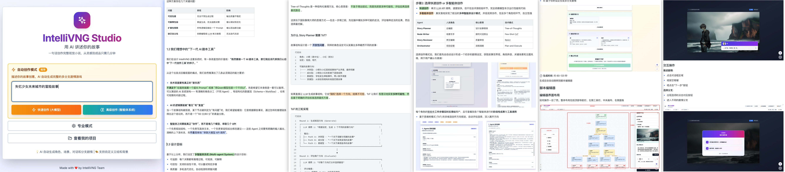

IntelliVNG Studio 多智能体视觉小说创作编排系统
整个项目是基于 Monorepo 架构、NextJS NodeSSR + NodeJS Server 前后端分离项目，Docker 部署版本创空间在 这里
🚩 项目代码已完全开源至 GitHub 及 魔搭创空间 ，欢迎 Star 和 亲自体验、验证效果
技术详解 及 真实运行流程 请阅读下方云文档：

写在前面：我们到底在做什么？
如果你从来没有玩过视觉小说游戏，也不太了解我们在做的工具，这一小节就是专门写给你的。
什么是“视觉小说”？
简单说，视觉小说是一种以文字和立绘为主的互动叙事游戏：
- 🎨 屏幕上通常只有几个人物立绘 + 一段段对话/旁白
- 🖱️ 玩家通过阅读对话，在关键节点做出选择
- 🔀 不同选择会走向不同的剧情分支，最终到达不同的结局
你可以把它想象成：“可以玩的电子小说 / 漫画脚本”。
我们的工具要做什么？
IntelliVNG Studio 想做的是一款 “从 0 到 可玩的多结局视觉小说” 的一站式 AI 创作工具：
用户只需填写表单：世界观、角色、场景、主题，甚至允许 AI 帮你写。无需写任何 Prompt 或代码。
AI Agents 自主探索、协作设计故事骨架、撰写完整对话、生成多结局分支。
生成结果直接导入可视化故事线编辑器 Editor，一键试玩、一键导出
换句话说：普通人即使完全不会写剧本，也可以在 5–10 分钟内，从一个模糊的想法走到一部“能玩”的多结局视觉小说。
一、需求初衷：为什么需要多智能体方案？
1.1 原有方案的局限
在早期版本中，我们使用单一的 LLM 调用来生成剧本。这种方案就像把所有压力都压在一个“大脑”上：
// 旧版：一个巨大的 Prompt，一次调用
const response = await openai.chat.completions.create({
messages: [
{ role: 'system', content: DIRECTOR_SYSTEM_PROMPT }, // 500+ 行的 prompt
{ role: 'user', content: userSetupPrompt },
],
max_tokens: 10000, // 极其容易截断
});| 问题 | 表现 | 影响 |
|---|---|---|
| 可控性差 | 无法干预生成过程 | 输出质量不稳定，经常偏题 |
| 可解释性弱 | 黑盒生成，无法追踪决策 | 难以调试和优化 |
| 扩展性受限 | 所有逻辑压缩在一个 Prompt | 难以添加新功能或工具 |
1.2 设计目标
我们希望下一代系统不仅能“生成”，还能“思考”和“自我修正”。
二、设计哲学与架构总览
2.1 核心理念：分而治之
创作一个视觉小说剧本涉及多个维度的决策：故事结构设计（宏观）、对话撰写（微观）、质量把控（元层面）。这些任务性质不同，需要不同的思维模式。
2.2 架构图
三、Agent 设计：三位专家 + 一位指挥
职责： 设计故事骨架、规划分支。
模式： ToT (思维树)。不急于得出结论，先探索多种故事走向，评估评分后选出最优路径。
职责： 撰写具体的对话、旁白和选项。
模式： 结合示例（Few-Shot）和思维链（CoT），并行生成各个节点的具体内容。
职责： 质量审核、逻辑检查。
模式： ReAct (推理+行动)。使用工具（结构验证、路径分析）收集客观证据，再进行评分。
3.1 Story Planner: Tree-of-Thoughts (ToT) 实现
ToT 让我们有意识地探索多种可能性。例如面对同样的“校园+恋爱”设定，Planner 会先构思“冲突型”、“成长型”、“悬疑型”三个方向，打分后选择最优解。
// 3轮 ToT 流程伪代码
console.log("[ToT] Round 1: 生成候选叙事方向...");
const candidates = await agent.generate(generatePrompt);
console.log("[ToT] Round 2: 评估候选方向...");
const evaluation = await agent.generate(evaluatePrompt);
// 比如选择了 "Path A: 冲突型" (得分 16/20)
console.log("[ToT] Round 3: 展开节点骨架...");
const plan = await agent.generate(expandPrompt);3.2 Story Reviewer: ReAct 模式
Reviewer 不会凭空说“这故事不错”，而是通过调用工具来“看到”剧本的结构问题。
四、数据流与协作
Schema 驱动开发
所有 Agent 之间的数据交换都通过 Zod Schema 定义，这确保了类型安全，并且 Schema 本身就是最好的 API 文档。
// Node Writer 输出结构定义
const NodeDraftSchema = z.object({
id: z.string(),
type: z.enum(["scene", "branch", "ending"]),
narration: z.string().optional(),
dialogues: z.array(DialogueDraftSchema),
choices: z.array(ChoiceDraftSchema).optional(),
summary: z.string(), // ← 供后续节点引用的摘要
});并行写作优化
为了提高速度，我们采用了拓扑排序分层的策略。同一层级（Layer）的节点之间没有依赖关系，可以并行调用 LLM 生成。
五、结语
IntelliVNG 多智能体系统展示了如何将学术界的 Agent 设计模式落地到实际产品中。
- 从黑盒到白盒：每个决策都有推理过程
- 从单次到迭代：支持自动重试和局部修正
- 从串行到并行：拓扑分层提升效率
这不仅是一个剧本生成工具，更是对“下一代 AI 辅助创作”形态的一次探索。